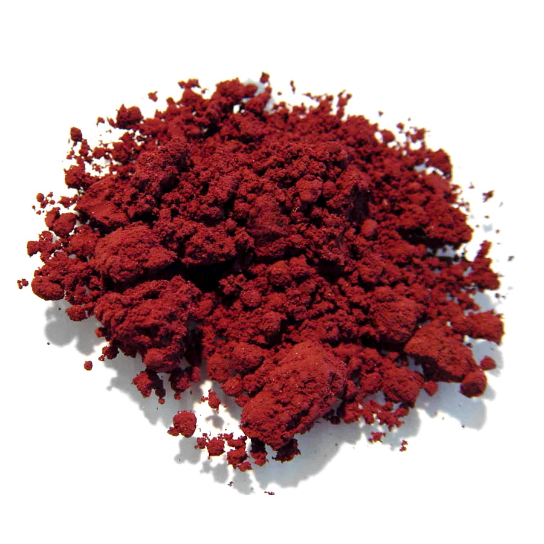

Dados Básicos
- Símbolo e Número: P, Número atômico 15, Massa atômica 30,97 u.
- Estado físico: Sólido em temperatura ambiente.
- Aparência (Alotropia): Pode apresentar-se como fósforo branco (macio, ceroso, altamente reativo), vermelho (pó amarronzado, mais estável) ou negro (semelhante ao grafite).
- Propriedades: Não metal do Grupo 15, com ponto de fusão de 44,1 °C e ebulição de 280 °C (fósforo branco).

História e Descoberta
O fósforo foi descoberto em 1669 pelo alquimista alemão Hennig Brand, na cidade de Hamburgo. Ele buscava a "pedra filosofal" e tentava obter ouro destilando uma grande quantidade de urina humana.
Por acaso (um fenômeno chamado serendipidade), ele acabou isolando uma substância branca que brilhava no escuro. O nome vem do grego phosphoros, que significa "portador de luz", devido a essa quimiluminescência.
Ocorrência e Usos no Cotidiano
Devido à sua alta reatividade, o fósforo não é encontrado livre na natureza, ocorrendo sempre combinado (como na apatita). No Brasil, há jazidas em MG, GO, SP e SC.
- Agricultura: É um dos três macronutrientes essenciais (junto de N e K), usado como superfosfato em fertilizantes.
- Cotidiano: O fósforo vermelho está presente na lixa da caixa de fósforos para gerar combustão.
- Alimentos: O ácido fosfórico atua como acidulante em refrigerantes de cola.
- Tecnologia: Usado como dopante em semicondutores de silício e painéis solares.
Importância Biológica e Riscos
No corpo humano: É essencial à vida. Compõe o DNA, RNA, a molécula de energia ATP e forma a estrutura de ossos e dentes. Sua deficiência causa raquitismo (crianças) e osteoporose (adultos).
Meio ambiente: O descarte excessivo de fósforo de esgotos e fertilizantes provoca a eutrofização de rios e lagos, matando os peixes por falta de oxigênio.
Perigo: O fósforo branco é altamente tóxico e inflama espontaneamente no ar, causando queimaduras graves (deve ser guardado sob a água).
Desenvolvedor
Fabio Luiz de Jesus Filho
Aluno - N° 12 | 2º DS A
Etec Guaianazes
Docentes
Elaine
Professora
Allan
Professor